Adding a Team Tournament Format
Many of the formats in Squabbit are played in teams including Ryder Cup, Scramble, Best Ball and Team Matchplay. This guide will show you how to set up a team format including how to set up matches.
In this example we will use Ryder Cup as the team format. If you’re not familiar with the Ryder Cup format, it is played with two large teams. In each round of the tournament each team is broken up into smaller teams that play a match against the other team. Whoever wins the match, wins points for their team.
Step 1: Create a new tournament
Tap the green + button in the Tournaments section of the Compete tab on the home screen.

Enter your tournament name, select the number of tournament rounds and the course(s) you are playing at. For more info on this step you can see the Creating a Tournament article.
Step 2: Add the Ryder Cup format
Tap .
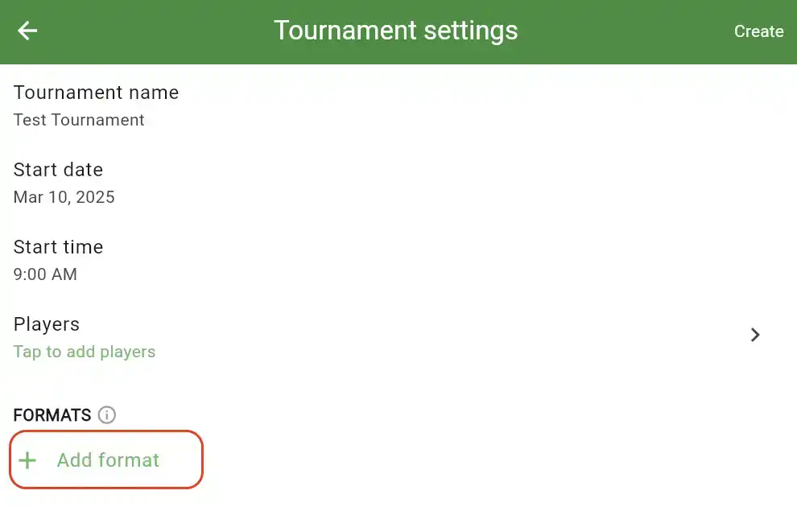
Then select the Ryder Cup format.
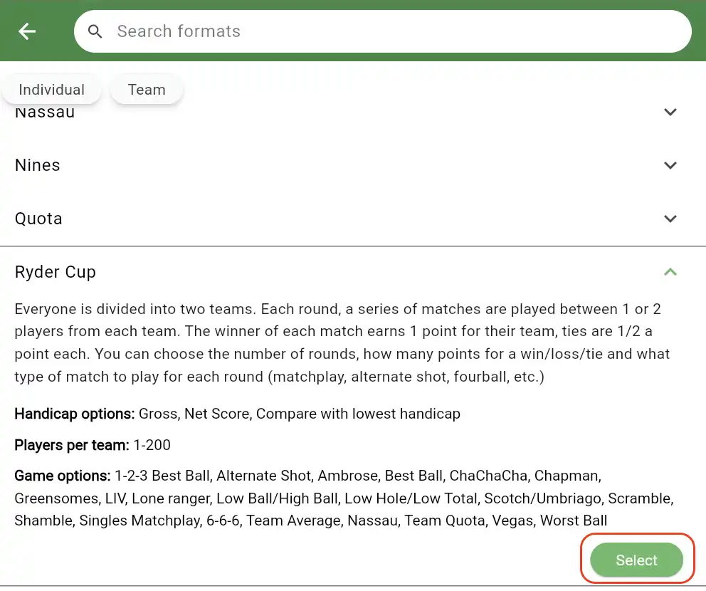
Step 3: Configure your Ryder Cup
After adding the format, you’ll be brought to the Ryder Cup format settings page. This is where you can configure all the different settings for your Ryder Cup format including teams, handicaps and game types played in each round. Each section is explained below.
Create the teams
Tap the Teams row to add the Ryder Cup teams.
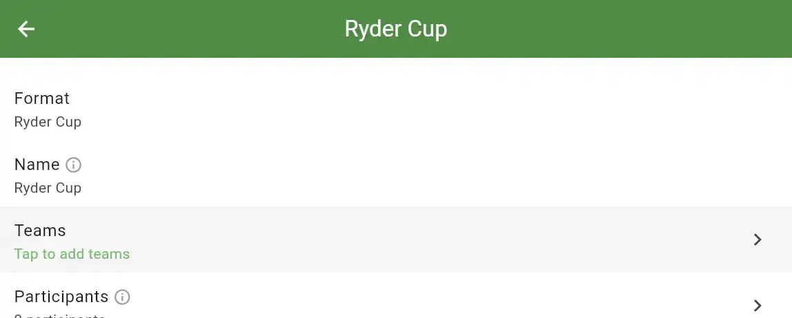
You’ll be presented with several options for creating teams. Note that the options to auto generate teams require that you already added players to your tournament.
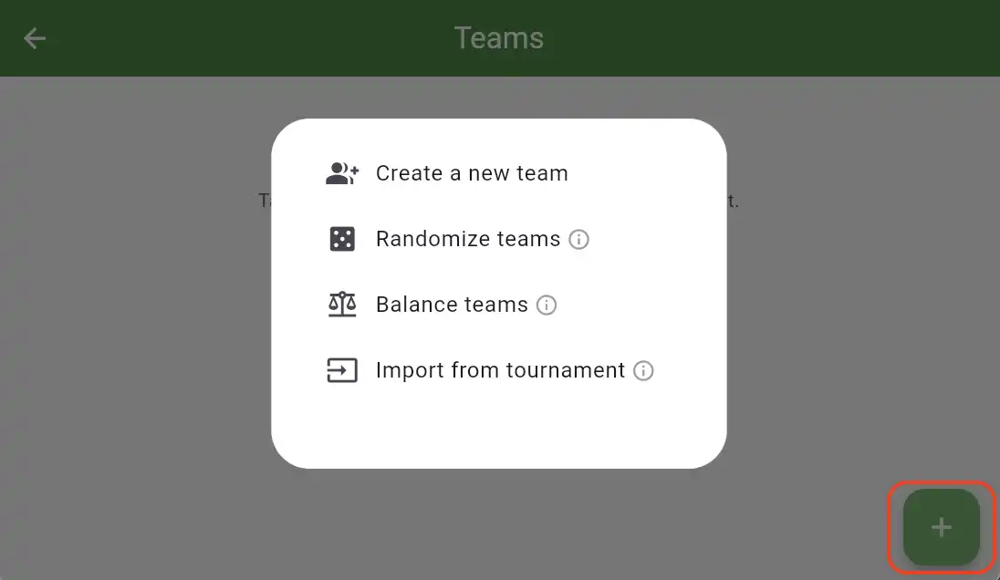
Create a new team: This allows you to manually create a new team.
Randomize teams: This will auto generate the teams by randomly allocating players to each team.
Balance teams: This will auto generate the teams by placing players on each team such that the sum of the players handicap is roughly equal on each team.
Import from tournament: This allows you to import a team from a previous tournament.
Once the teams are created, you can always tap on the pencil icon beside the team name to edit it.
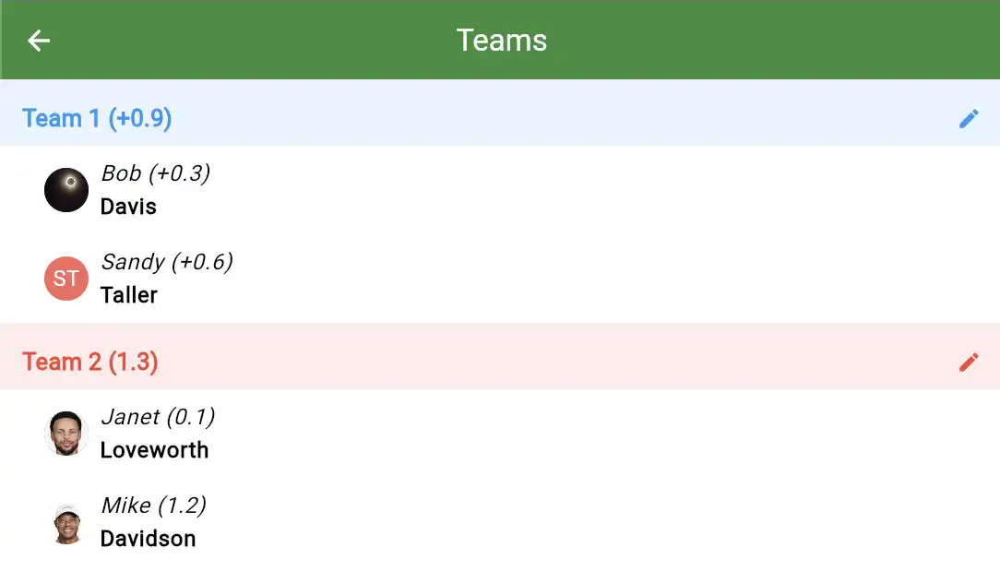
Configure game settings for each round
You’ll also see a section for each round in your tournament. This allows you to configure what game you’re playing in each round. For example you might be playing 2 vs 2 Best Ball in round 1 and 1 vs 1 Matchplay in round 2. You can also choose whether or not you want this round to count towards the Ryder Cup format. For example if you’re having a warm up round in Round 1, then you could disable the “Enabled” selector to not have it count towards the Ryder Cup.
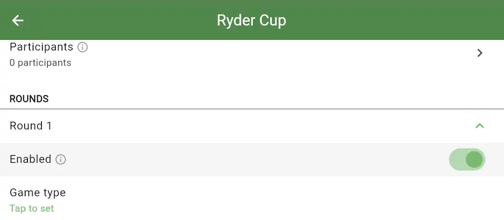
After you’ve chosen the game, there are many other game specific settings you can configure. You can also choose how many Ryder Cup points you want to be awarded based on the results of each match. This includes optionally awarding points for the front and back 9.
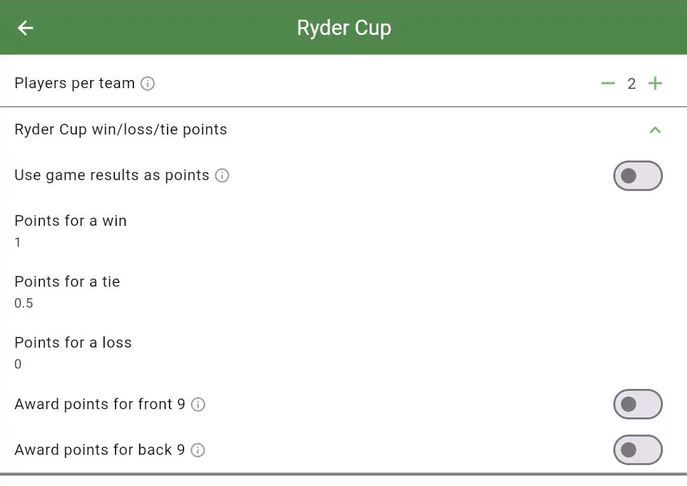
Step 4: Configure the matches
After finishing your Ryder Cup settings, you can return to the tournament page and tap the Schedule tab. This is where you can configure the matches that are being played in each round of the tournament. Tap the green + button to create the matches.
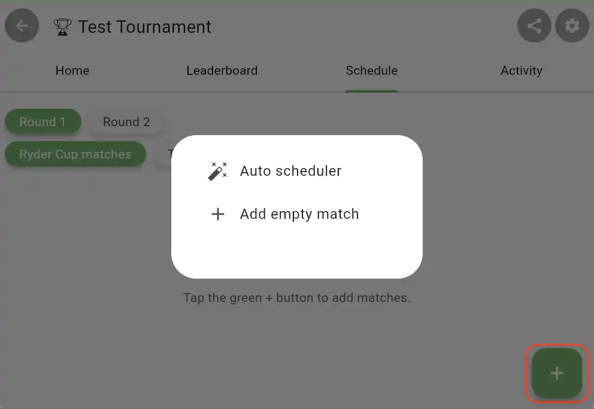
This will present you with the option to use the Auto scheduler or to manually create the matches by adding an empty match.
If you use the Add empty match option, it will create an empty match and you can select the players for each slot.
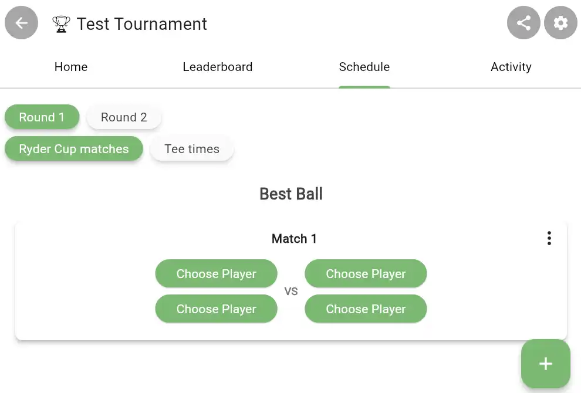
If you use the Auto scheduler you will be presented with several options to automatically generate the matches (including who is playing together on a team and who is playing against each other) and the tee times.
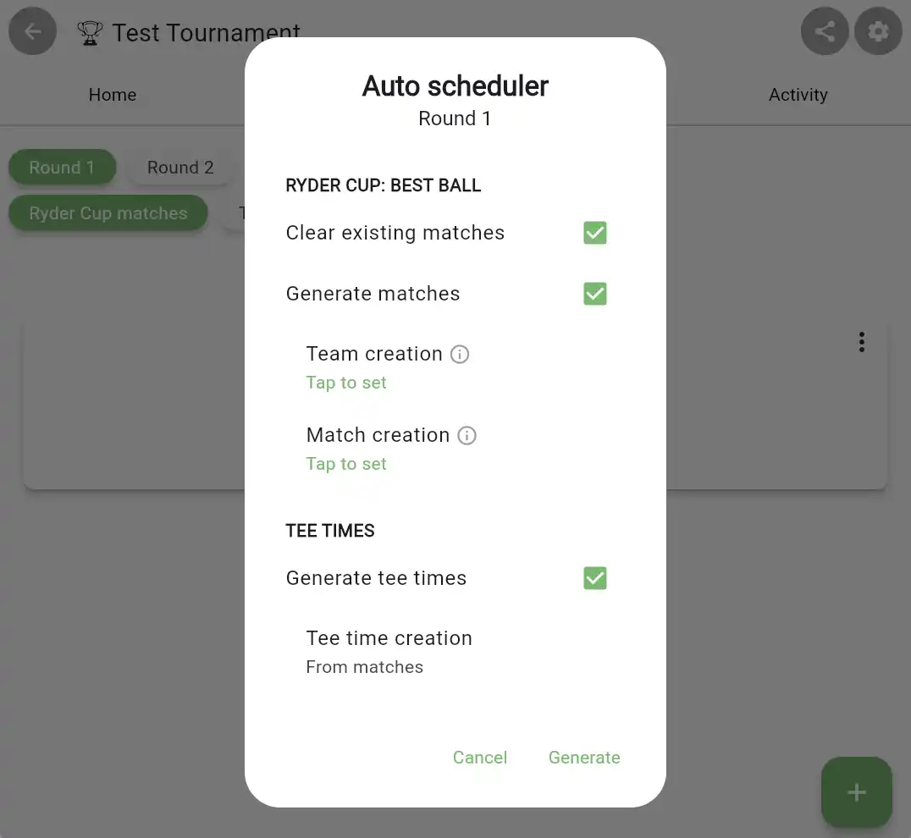
Once you’ve created the matches, you’ll see them displayed. You can edit the matches at any time.
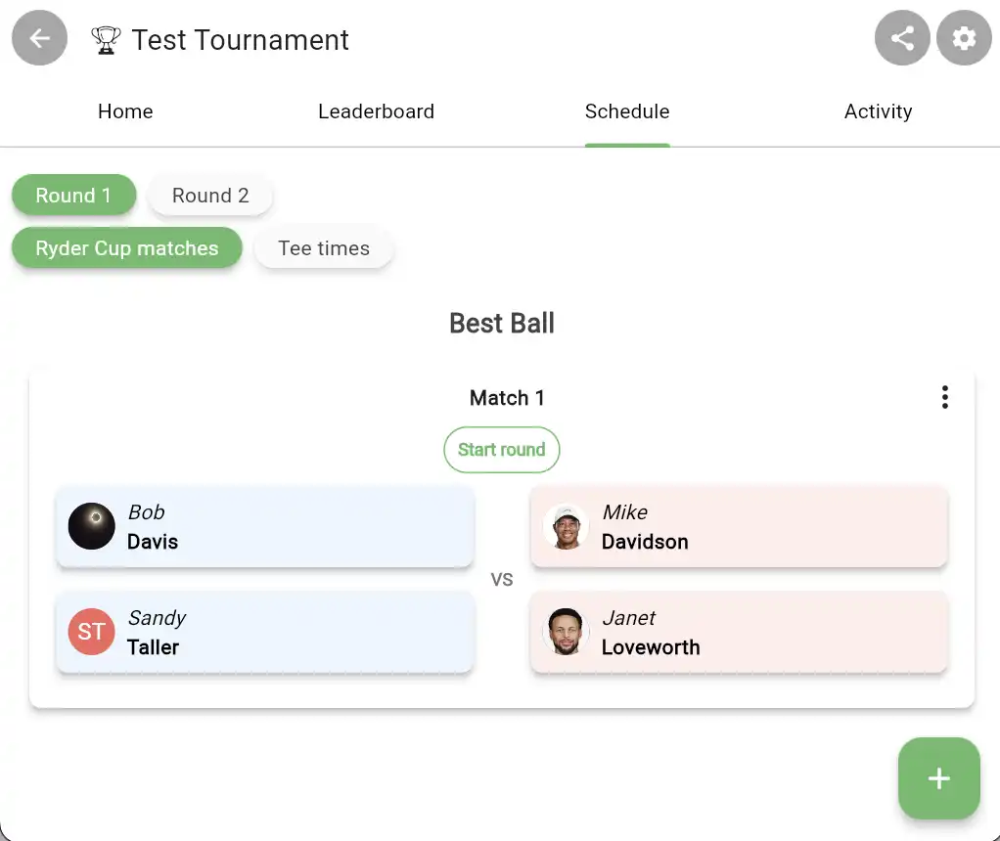
You’re done!
That’s all there is to it. Players can start their match either by tapping the green play button beside their name in the leaderboard or on the Start round button on their match or tee time.
You can see the overall Ryder Cup score from the Leaderboard tab. This includes projected points based on the players who are currently winning their match but have not completed it.
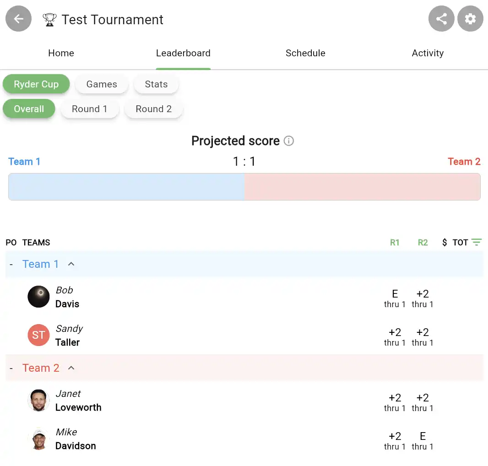
You can also tap on the Round number in the leaderboard tab when Ryder Cup is selected to see the details of each match.
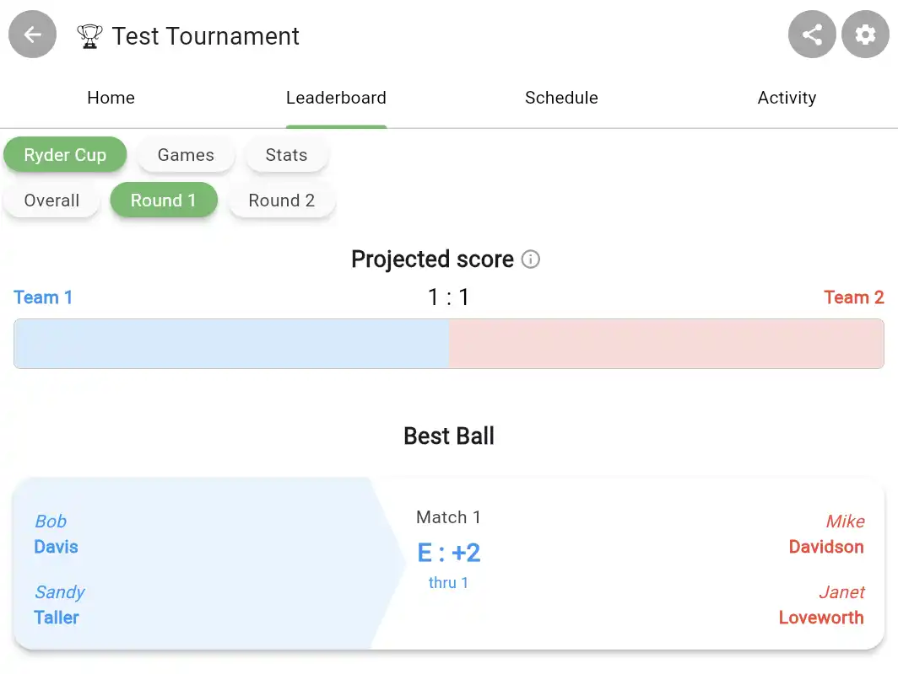